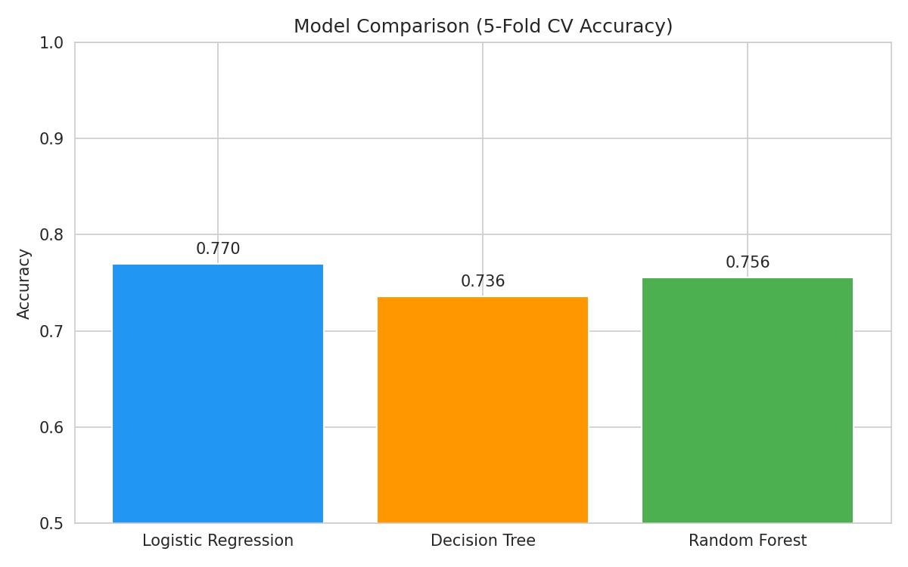
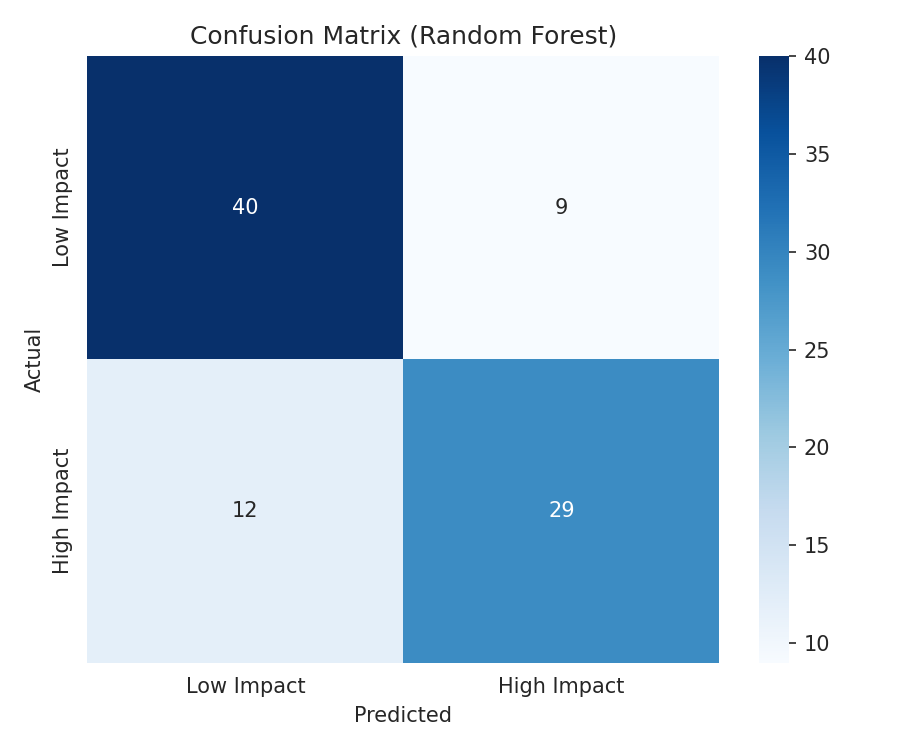
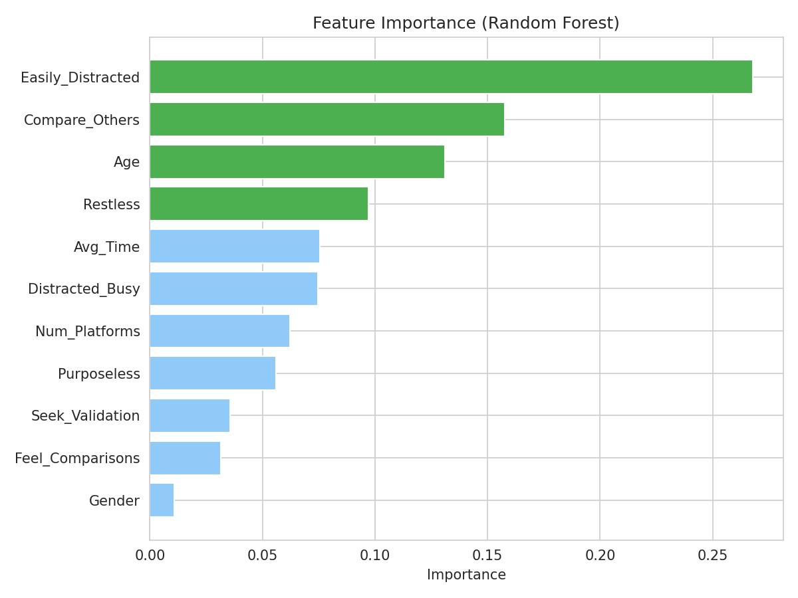

A technical walkthrough of dataset design, preprocessing decisions, model experiments, and evaluation of a binary classification task predicting mental health impact from social media usage patterns.
The dataset used in this project is the Social Media and Mental Health survey compiled by Souvik Ahmed and published on Kaggle in 2023.1Ahmed, S. (2023) "Social Media and Mental Health" dataset. Kaggle. kaggle.com/datasets/souvikahmed071/social-media-and-mental-health The survey was distributed as a Google Form and collected responses from anonymous participants across three broad categories: demographic background, social media usage patterns, and self-reported mental health indicators.
| Feature | Type | Description | Role |
|---|---|---|---|
| Age | Numeric | Respondent age in years | Predictor |
| Gender | Encoded | Male=0, Female=1, Non-binary/Trans=2 | Predictor |
| Avg_Time | Numeric | Average daily social media hours (midpoint-encoded from ranges) | Predictor |
| Num_Platforms | Numeric | Count of distinct platforms used (derived from comma-separated list) | Predictor |
| Purposeless | Likert 1-5 | Frequency of using social media without a specific purpose | Predictor |
| Distracted_Busy | Likert 1-5 | Frequency of being distracted by social media when busy | Predictor |
| Restless | Likert 1-5 | Restlessness when not using social media | Predictor |
| Easily_Distracted | Likert 1-5 | General ease of distraction (top feature importance) | Predictor |
| Compare_Others | Likert 1-5 | Frequency of comparing oneself to others online (top feature importance) | Predictor |
| Feel_Comparisons | Likert 1-5 | How comparisons make the respondent feel | Predictor |
| Seek_Validation | Likert 1-5 | Frequency of seeking validation through social media | Predictor |
| Bothered_Worries | Likert 1-5 | Frequency of being bothered by worries | Target component |
| Hard_Concentrate | Likert 1-5 | Difficulty concentrating | Target component |
| Feel_Depressed | Likert 1-5 | Frequency of feeling depressed or down | Target component |
| Interest_Fluctuate | Likert 1-5 | Fluctuation of interest in daily activities | Target component |
| Sleep_Issues | Likert 1-5 | Frequency of sleep disturbances | Target component |
| High_Impact | Binary | 1 = above-median composite mental health score, 0 = at or below | Target (y) |
The survey does not include a pre-labeled outcome variable, so the binary target was constructed manually. Five mental health Likert-scale questions (Bothered_Worries, Hard_Concentrate, Feel_Depressed, Interest_Fluctuate, Sleep_Issues) were summed into a composite MH_Score ranging from 5 to 25. The median value of this composite score across the cleaned dataset was 17. Respondents scoring above 17 were labeled High Impact (1); those scoring 17 or below were labeled Low Impact (0).
Splitting at the median produces a near-balanced class distribution (203 high, 243 low), which avoids the class imbalance problems that can cause classifiers to simply predict the majority class. A more extreme threshold (e.g., top quartile) would create a harder classification task but with severe class imbalance. The median split was chosen as a pragmatic starting point, with the caveat that this threshold is not clinically validated.
The five questions selected for the composite score were chosen based on their face validity as mental health indicators, but this selection is a judgment call. A formally validated instrument such as the PHQ-9 (depression screening) or GAD-7 (anxiety screening) would provide a more defensible outcome measure. Different question subsets or weighting schemes could produce meaningfully different labels for individual respondents.
The following steps were applied to transform the raw survey data into a model-ready feature matrix. Each decision and its underlying assumption are documented below.
| Column Removed | Reason |
|---|---|
| Timestamp | Survey submission time has no plausible causal or correlational relationship with mental health outcomes. Including it would add noise without signal. |
| Uses_SM | Every respondent in the dataset answered "Yes" to whether they use social media. This makes it a zero-variance feature it carries no discriminative information since it is identical across all rows. |
| Organization | Contains approximately 30 missing values and no consistent coding that would allow meaningful encoding. Dropped rather than imputed due to the high ambiguity of responses. |
| Relationship, Occupation, Platforms (raw) | Relationship and Occupation were not part of the designed feature set for this analysis. The raw Platforms column was replaced by the engineered Num_Platforms count feature. |
After dropping the columns listed above, df.dropna() was applied to remove the 35 remaining rows containing at least one missing value. This reduced the dataset from 481 to 446 rows.
This approach assumes that missing values are missing at random (MAR) that the probability of a value being missing is unrelated to the value itself or to the outcome. If respondents who skipped questions about mental health were systematically different (e.g., more distressed), listwise deletion could introduce bias. Given the relatively small number of dropped rows (7.3% of the dataset), this risk is considered acceptable for this analysis.
The Avg_Time column stored daily social media usage as categorical text ranges (e.g., "Between 2 and 3 hours"). These were mapped to their numeric midpoints:
time_map = {
"Less than an Hour": 0.5,
"Between 1 and 2 hours": 1.5,
"Between 2 and 3 hours": 2.5,
"Between 3 and 4 hours": 3.5,
"Between 4 and 5 hours": 4.5,
"More than 5 hours": 5.5
}
Gender was label-encoded as Male=0, Female=1, Non-binary=2, Transgender=2.
Label encoding implies an ordinal relationship between gender categories that does not actually exist. A more rigorous approach would use one-hot encoding, creating separate binary columns for each gender category. However, the number of non-binary and transgender respondents in this dataset is small, and the practical impact on predictive performance is expected to be minimal. This encoding should be revised in future iterations.
The raw Platforms column stored comma-separated lists of platform names (e.g., "Facebook, Instagram, YouTube"). Rather than one-hot encoding each individual platform (which would add sparsity), the number of platforms used was extracted as a single numeric feature:
df["Num_Platforms"] = df["Platforms"].str.split(",").str.len()
All 11 predictor features were scaled using StandardScaler (zero mean, unit variance) after the train/test split.
The features operate on very different numeric scales: Age ranges up to ~35 while all Likert-scale variables span only 1 to 5. Without scaling, algorithms that rely on distance or magnitude (including Logistic Regression's gradient descent and any regularization) would implicitly assign more weight to higher-magnitude features. Scaling ensures each feature contributes proportionally based on its actual variance, not its units.
StandardScaler was fit using fit_transform() on the training set only. The test set was transformed using transform() with the scaler already fit on training data. Fitting the scaler on the full dataset before splitting would constitute data leakage the test set's statistics would have influenced the scaling parameters, giving the model access to information it should not have seen during training.
Three classification models were trained and compared using 5-fold cross-validation on the training set. The dataset was split 80/20 (train/test) with stratify=y to maintain the class distribution ratio in both splits. random_state=42 was set for reproducibility.
The three models represent different points on the complexity-interpretability spectrum and test different assumptions about the data's underlying structure:
| Model | CV Accuracy (mean) | Test Accuracy | Gap | Interpretation |
|---|---|---|---|---|
| Logistic Regression | 76.97% | 76.67% | 0.30% | Very low gap strong generalization, no meaningful overfitting. |
| Random Forest | 75.57% | ~74% | <2% | Small gap consistent with good generalization despite ensemble complexity. |
| Decision Tree | 73.60% | ~72% | ~2% | Slightly larger gap; max_depth=5 constraint limits but does not fully prevent overfitting. |
When a model's cross-validation accuracy is notably higher than its test accuracy, it has overfit to the training data it has memorized patterns specific to training examples that do not generalize. For Logistic Regression, the CV and test accuracies differ by only 0.30 percentage points, which is strong evidence that the model has learned generalizable patterns rather than memorizing training examples.
| Model | Parameter | Value | Reason |
|---|---|---|---|
| Logistic Regression | max_iter | 1000 | Default of 100 caused convergence warnings on this dataset; increased to ensure the solver fully converges. |
| Logistic Regression | C (regularization) | 1.0 (default) | Default L2 regularization retained. Tuning C via grid search could further improve performance. |
| Decision Tree | max_depth | 5 | Limits tree growth to prevent overfitting. Without this constraint, a tree trained on 357 samples can perfectly memorize training data but fails on unseen examples. |
| Random Forest | n_estimators | 100 | 100 trees provides stable importance scores and predictions. Diminishing returns typically seen beyond 100-200 trees on datasets this size. |
| Random Forest | max_depth | 5 | Same rationale as Decision Tree individual trees in the forest are also constrained to reduce overfitting tendency of each tree. |
| All models | random_state | 42 | Fixed seed ensures full reproducibility of results across runs. |

All three models cluster within a ~3.4 percentage point range (73.6% to 77.0%). The narrow spread suggests the dataset has a real but modest signal the predictive information present in these 11 features supports roughly 77% accuracy regardless of the model architecture. The fact that a simple linear model (Logistic Regression) outperforms more complex ones (Random Forest, Decision Tree) is consistent with the hypothesis that the relationship between these social media behaviors and mental health impact is approximately linear in the transformed feature space.
Logistic Regression was selected as the final model and evaluated on the held-out test set (90 samples, 20% of cleaned data). The evaluation uses multiple metrics because accuracy alone can be misleading, especially when the cost of different error types differs.

True Negatives: 40 | False Positives: 9 | False Negatives: 12 | True Positives: 29
| Quadrant | Count | What it means | Consequence |
|---|---|---|---|
| True Negatives (TN) | 40 | Model predicted Low Impact; person actually had Low Impact | Correct no harm |
| True Positives (TP) | 29 | Model predicted High Impact; person actually had High Impact | Correct no harm |
| False Positives (FP) | 9 | Model predicted High Impact; person actually had Low Impact | Over-identification minor concern |
| False Negatives (FN) | 12 | Model predicted Low Impact; person actually had High Impact | Missed cases most concerning in a mental health context |
In any mental health screening context, false negatives (predicting someone is fine when they are not) are more consequential than false positives (predicting someone has elevated symptoms when they do not). The model produced 12 false negatives vs. 9 false positives, meaning it misses slightly more at-risk individuals than it incorrectly flags. Improving recall on the High Impact class at the cost of some precision would be the appropriate optimization direction for any real-world application of this type of model.

Importances represent the mean decrease in Gini impurity contributed by each feature across all 100 trees. Higher values indicate features that more consistently split the data into purer subsets at decision nodes.
| Rank | Feature | Importance Score | Interpretation |
|---|---|---|---|
| 1 | Easily_Distracted | Highest | Attentional fragmentation caused by social media is the single strongest predictor of elevated mental health impact. This aligns with research linking chronic distraction to anxiety and reduced wellbeing.2Twenge et al. (2018) Increases in depressive symptoms, suicide-related outcomes, and suicide rates among U.S. adolescents. Clinical Psychological Science, 6(1), 3-17. |
| 2 | Compare_Others | High | Frequency of comparing oneself to others online. Consistent with social comparison theory: upward comparisons with idealized online personas reliably reduce self-esteem and increase depressive symptoms.3Festinger, L. (1954) "A theory of social comparison processes." Human Relations, 7(2), 117-140. |
| 3 | Seek_Validation | Moderate-High | Seeking external validation through likes and comments is associated with elevated mental health scores, consistent with literature on social media dependency and self-esteem. |
| 4 | Feel_Comparisons | Moderate | How comparisons make the respondent feel mediates the relationship between Compare_Others and mental health outcomes. |
| 5 | Avg_Time | Mid-range | Raw daily usage hours contribute less than behavioral patterns. Supports the conclusion that what a person does on social media matters more than how long they spend on it. |
The feature importance results indicate that behavioral and psychological engagement patterns (social comparison, validation-seeking, attentional disruption) are stronger predictors of mental health impact than raw usage time. This has practical implications: interventions that reduce comparison-driven browsing and support attentional habits may be more effective than broad screen time limits.
The cleaned dataset contains 446 responses. While adequate for a proof-of-concept, this limits statistical power and generalizability. The survey's recruitment mechanism is undocumented, raising the possibility of convenience sampling bias respondents may skew toward specific demographics, institutions, or regions. Results should not be generalized without validation on a larger, independently collected sample.
All variables are self-reported. Two systematic biases are likely present: (1) Recall bias studies comparing self-reported screen time to device-tracked data consistently show divergence; people are poor judges of their own usage.4Vanden Abeele et al. (2013) "Measuring mobile phone use." Mobile Media & Communication, 1(2), 213-236. (2) Social desirability bias respondents may underreport mental health symptoms due to stigma. Both biases weaken the signal the model is learning from.
The binary target was constructed by summing 5 Likert questions and splitting at the median. This is not a clinically validated measure of mental health. The choice of which questions to include, and the median as a threshold, are arbitrary design decisions. A different researcher making different choices could produce a meaningfully different labeled dataset from the same raw responses.
The model identifies statistical associations between predictors and the target variable. It cannot establish that social media behaviors cause elevated mental health impact. Reverse causality is plausible: individuals already experiencing mental health difficulties may increase comparison behavior and validation-seeking. Longitudinal data would be required to test directionality.
Label encoding gender (Male=0, Female=1, Non-binary=2) introduces a false ordinal relationship. Future work should use one-hot encoding or, given the small sample of non-binary respondents, collect a larger and more balanced sample before drawing gender-related conclusions.
Models were run with mostly default hyperparameters. A systematic grid search or cross-validated tuning of regularization strength (C for Logistic Regression), tree depth, and number of estimators could meaningfully improve performance beyond the ~77% accuracy achieved here.
This model was built for academic research purposes and should not be applied to individual-level screening or decision-making. Applying a probabilistic group-level classifier to make inferences about individuals introduces serious ethical risks:
Working through this project made me realize how much methodological choices shape the outcome. The target variable I constructed is not "ground truth" it is one of many possible ways to operationalize mental health impact from this dataset. That uncertainty should make anyone more careful about over-interpreting the results.
The feature importance finding was the most surprising part of this project. I expected daily usage time to be the dominant predictor, but it ranked in the middle of the feature list. The result that comparison behavior and attentional disruption outperform raw time as predictors feels more actionable it suggests that the mechanism linking social media to mental health runs through specific behavioral patterns, not just volume of exposure. This is a finding worth investigating further with more rigorous data.
If I were to redo this project, I would use a validated mental health scale as the outcome measure, collect a larger and more diverse sample, and apply proper hyperparameter tuning. I would also consider testing whether separate models for different demographic subgroups (e.g., by age bracket or gender) outperform a single pooled model.
All analysis was run in Google Colab. The code is organized into sequential cells with explanations of every step. All random seeds are fixed for reproducibility.
import pandas as pd import numpy as np import seaborn as sns import matplotlib.pyplot as plt from sklearn.model_selection import train_test_split, cross_val_score from sklearn.preprocessing import StandardScaler from sklearn.linear_model import LogisticRegression from sklearn.tree import DecisionTreeClassifier from sklearn.ensemble import RandomForestClassifier from sklearn.metrics import classification_report, confusion_matrix
df = pd.read_csv("smmh.csv")
df.columns = [
"Timestamp", "Age", "Gender", "Relationship", "Occupation", "Organization",
"Uses_SM", "Platforms", "Avg_Time", "Purposeless", "Distracted_Busy",
"Restless", "Easily_Distracted", "Bothered_Worries", "Hard_Concentrate",
"Compare_Others", "Feel_Comparisons", "Seek_Validation", "Feel_Depressed",
"Interest_Fluctuate", "Sleep_Issues"
]
df.isnull().sum()
df = df.drop(columns=["Timestamp", "Uses_SM"])
df = df.dropna()
time_map = {
"Less than an Hour": 0.5, "Between 1 and 2 hours": 1.5,
"Between 2 and 3 hours": 2.5, "Between 3 and 4 hours": 3.5,
"Between 4 and 5 hours": 4.5, "More than 5 hours": 5.5
}
df["Avg_Time"] = df["Avg_Time"].map(time_map)
df["Gender"] = df["Gender"].map({"Male": 0, "Female": 1, "Nonbinary": 2, "Transgender": 2})
df["Num_Platforms"] = df["Platforms"].str.split(",").str.len()
df = df.drop(columns=["Platforms", "Organization", "Relationship", "Occupation"])
df = df.dropna()
df["MH_Score"] = (df["Bothered_Worries"] + df["Hard_Concentrate"] +
df["Feel_Depressed"] + df["Interest_Fluctuate"] + df["Sleep_Issues"])
median_score = df["MH_Score"].median()
df["High_Impact"] = (df["MH_Score"] > median_score).astype(int)
feature_cols = ["Age", "Gender", "Avg_Time", "Num_Platforms", "Purposeless",
"Distracted_Busy", "Restless", "Easily_Distracted",
"Compare_Others", "Feel_Comparisons", "Seek_Validation"]
X = df[feature_cols]
y = df["High_Impact"]
X_train, X_test, y_train, y_test = train_test_split(
X, y, test_size=0.2, random_state=42, stratify=y)
scaler = StandardScaler()
X_train_scaled = scaler.fit_transform(X_train)
X_test_scaled = scaler.transform(X_test)
lr = LogisticRegression(random_state=42, max_iter=1000)
lr_scores = cross_val_score(lr, X_train_scaled, y_train, cv=5, scoring="accuracy")
dt = DecisionTreeClassifier(random_state=42, max_depth=5)
dt_scores = cross_val_score(dt, X_train_scaled, y_train, cv=5, scoring="accuracy")
rf = RandomForestClassifier(random_state=42, n_estimators=100, max_depth=5)
rf_scores = cross_val_score(rf, X_train_scaled, y_train, cv=5, scoring="accuracy")
print(f"LR CV: {lr_scores.mean():.4f}")
print(f"DT CV: {dt_scores.mean():.4f}")
print(f"RF CV: {rf_scores.mean():.4f}")
lr.fit(X_train_scaled, y_train) lr_pred = lr.predict(X_test_scaled) print(classification_report(y_test, lr_pred, target_names=["Low Impact", "High Impact"]))
cm = confusion_matrix(y_test, lr_pred)
sns.heatmap(cm, annot=True, fmt="d", cmap="Blues",
xticklabels=["Low", "High"], yticklabels=["Low", "High"])
plt.title("Confusion Matrix Logistic Regression")
plt.ylabel("Actual"); plt.xlabel("Predicted"); plt.tight_layout(); plt.savefig("fig5_confusion_matrix.png")
rf.fit(X_train_scaled, y_train)
feat_imp = pd.DataFrame({"Feature": feature_cols, "Importance": rf.feature_importances_})
feat_imp = feat_imp.sort_values("Importance", ascending=False)
sns.barplot(data=feat_imp, x="Importance", y="Feature")
plt.title("Feature Importance Random Forest")
plt.tight_layout(); plt.savefig("fig6_feature_importance.png")
I built this analysis end to end. When I ran into bugs in my code, I used Claude (claude.ai) as a debugging reference, the same way I would use Stack Overflow. I also used it to help with the HTML and CSS layout of this page. Every analytical decision feature selection, model choices, target variable construction, and what the results mean was made by me, and I reviewed everything before it went in.